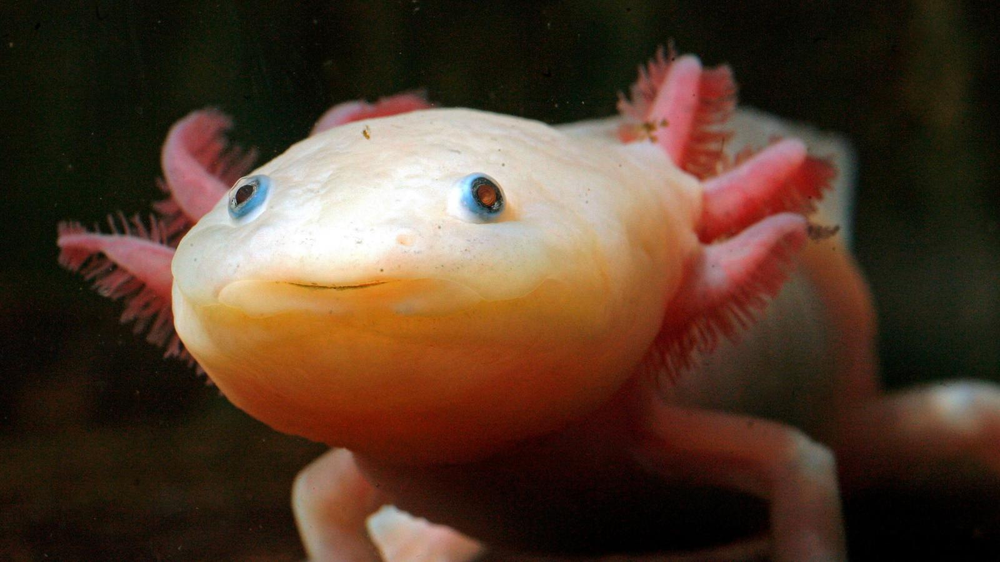

Regeneration
Home
Regeneration
Care
Photos
Henry
Axolotls are Resistant!
Axolotls are able to regrow almost any part of their body that gets injured, even whole organs!
Their ability to regenerate is being studied for possible use in medical fields.

Complete Axolotl Genome Could Reveal the Secret of Regenerating Tissues